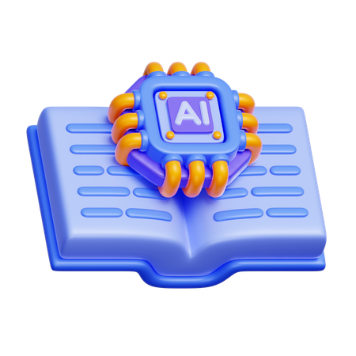

Glosario de Términos Básicos
Todo campo tecnológico tiene su propio vocabulario. Conocer estos términos te ayudará a leer noticias, tutoriales y documentación sobre Inteligencia Artificial con mayor confianza.
Las definiciones están escritas en lenguaje sencillo; úsalas como consulta rápida cuando encuentres una palabra nueva.

Términos y definiciones
Algoritmo
Conjunto ordenado y finito de instrucciones que permite realizar una actividad o resolver un problema.
Big Data
Conjuntos de datos masivos que superan la capacidad del software convencional para ser procesados.
Prompt
Texto o instrucción dada a un modelo de IA generativa para obtener una respuesta deseada.
Red Neuronal
Modelo matemático computacional inspirado en la estructura de neuronas del cerebro humano.
Machine Learning
Técnica en la que un sistema aprende patrones a partir de datos en lugar de seguir reglas fijas.
Dataset
Colección organizada de datos (imágenes, textos, números) usada para entrenar o probar un modelo.
Entrenamiento
Proceso en el que un modelo analiza muchos ejemplos y ajusta sus parámetros para mejorar sus resultados.
Sesgo algorítmico
Error sistemático que produce resultados injustos, normalmente por datos de entrenamiento desbalanceados.
Chatbot
Programa que conversa con las personas por texto o voz para responder dudas o realizar tareas.
IA generativa
Tipo de IA que crea contenido nuevo, como textos, imágenes, música o código.
Deepfake
Video, imagen o audio falso creado con IA que imita de forma realista a una persona.
Visión por computadora
Rama de la IA que permite a las máquinas interpretar imágenes y videos.